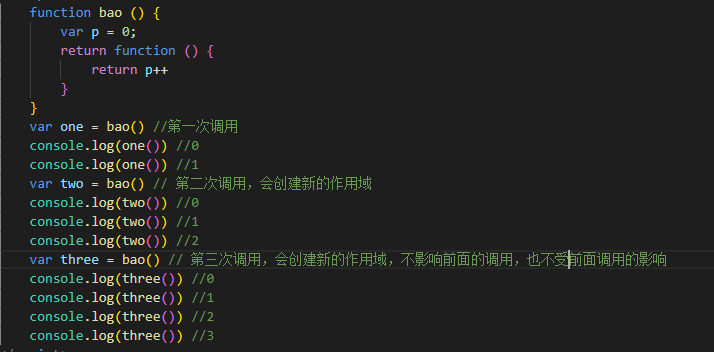

在面试题中，闭包应该是必问的问题吧(以下内容纯属个人理解，欢迎大家指正不足)
下面我们就简单的了解一下闭包这个东西到底是什么
首先，我们先来讲讲什么是闭包
简单来说就是一个定义在函数内部的函数，可以读取到其他函数内部变量的函数，本质上，闭包就是一个把函数内部和外部连接起来的桥梁
那我们读取函数内部的变量为什么要用到闭包呢，或者说闭包的作用是什么？
这就涉及到变量的生命周期问题了，函数内部定义的变量属于局部变量，局部变量的生命周期是：当它所在的函数被调用的时候，就是开始，当调用执行一旦结束，局部变量就会被释放，当我们需要函数内部变量时，他已经被释放了，读取不到了，这个时候怎么解决？我们就要想办法延长他的生命周期
闭包的目的也可以说就是这个，延长局部变量的生命周期，当函数执行完毕以后，局部变量不可以被内存释放，然后让外部可以访问到这个变量
那我们如何判断闭包是不是存在呢
闭包主要有以下几个特点：
1、函数套函数，闭包一定有嵌套函数
这个意思从闭包的字面定义上其实就可以大概推出来，定义在函数内部的函数；
那为什么一定要函数套函数呢？因为需要局部变量，闭包的目的就是访问函数内部的局部变量，如果不定义局部变量，那就达不到我们的目的——延长变量生命周期
2、外层函数一定有局部变量，且内层函数一定操作了外层函数的这个变量
3、外层函数一定把内层函数返回外部，使用return
为什么要用return返回这个内层函数呢？因为如果不返回这个内层函数，你就没办法使用这个闭包，返回内层函数的最终的目的就是让外部可以访问到这个闭包，如果外部没办法访问闭包，那闭包怎么做函数内部和外部沟通的桥梁
在做闭包的问题时，我们还需要注意以下两点：
1、外层函数被多次调用，都会创建新的作用域，也就是说内层函数操作的外层函数的局部变量之间是不会影响的
这句话简单来说就是我第一次调用这个外层函数，使用了内部的局部变量 p；我第二次第三次再调用这个外层函数使用变量 p的时候，会创建新的作用域，并不会对之前的调用产生什么影响
2、外层函数返回的内层函数被调用几次，内层函数操作的外层函数的局部变量就会变化几次
上面两点都可以通过下面这段代码看出来

下面是具体的输出结果
对前面解释不明白的可以结合代码和输出结果来分析，
第一点：每次的外层函数调用输出结果都是互不影响的，看每次调用的第一个输出结果都为0（这里调用的是外层函数）；
第二点，在我【one第一次调用】【two第二次调用】【three第三次调用】的几次输出结果中可以看出，我每输出一次（内层函数被调用一次），变量的值就会发生变化，自增1，我输出几次也就是调用了几次，变量他就变化了几次
请注意上面虽然都是说调用，但是调用的函数是不同的，调用的是外层函数，变量互不影响，调用的是内层函数，那么变量变化会根据你调用的次数变化
这里我也不知道大家能不能明白我到底想表达个啥
闭包的坏处
闭包使函数内部的变量不能被内存释放，这些变量就会占用内存，内存消耗大，可能会导致内存泄露
解决这个问题的办法就是在不使用这些变量时，及时把不需要的局部变量全部删除